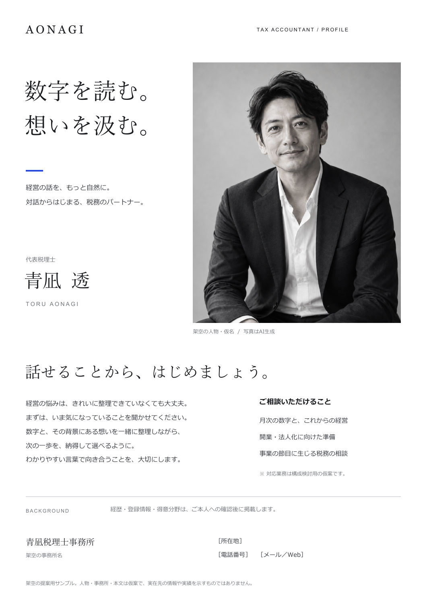

構成と文章の意図を見る
最初に写真と短いメッセージで人柄を伝え、次に仕事への姿勢と相談テーマを紹介。経歴と事務所情報は下部にまとめ、初対面の会話から、後日の相談につながる順序で設計しています。
「数字を読む。想いを汲む。」という短いコピーと、大きなモノクロのポートレートを軸に設計。白と墨色に青を一点だけ添え、文章の量を絞り、写真と文字の大小で読み順をつくっています。
本文と相談テーマは方向性を示す仮案です。氏名「青凪 透」と事務所名は架空の仮称です。経歴・資格・連絡先はご本人への確認後に掲載する想定です。写真はAIで生成した架空人物で、実在する税理士や事務所の情報・実績を示すものではありません。
このPDFは提案確認用です。本制作では支給写真・確定原稿に差し替え、印刷会社の指定に合わせて塗り足し・色・データ形式を調整します。